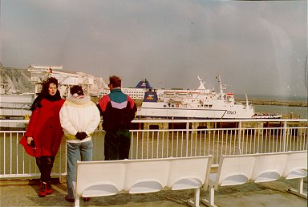
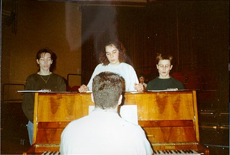
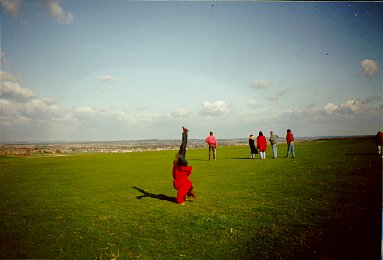
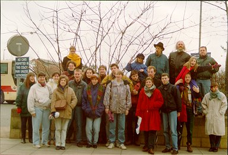
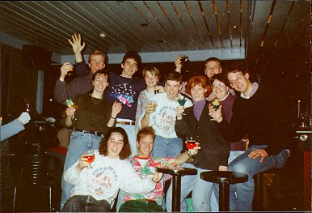

| |
|
Een afvaardiging van het ESMG ging dit keer op bezoek bij een koor in
Dorchester, Dorset, Zuid-Engeland.

Op de ferry begon de ijzige stormwind al.
(vlnr: Nicole van Hooy, Nicole van de Wildenberg, mijzelf)

Voor het gezamenlijke concert moet serieus worden gerepeteerd.
(vlnr: Nathalie van Galen, Nicole van Hooy, Annemiek van Brunschot; voor:
Ruud Huijbregts)

Een wandeling. Anneke Engelen vindt dat het zo gemakkelijker is weerstand te
bieden aan de harde, ijzige wind.

Samen met onze gastheren/dames in bad... sorry: in Bath.
(o.a. Nicole van den Wildenberg, Nathalie van Galen, Annemiek van Brunschot,
Henri de Brabander, Nicole van Hooy, Vincent Houkes, Igor Bogaert, Anneke
Engelen, Yvo de Jong, Ruud Huijbregts en mijzelf)

Terug in de AOR moet gevierd worden dat we het links rijdende land zonder
kleerscheuren weer uit gekomen zijn.
|
|